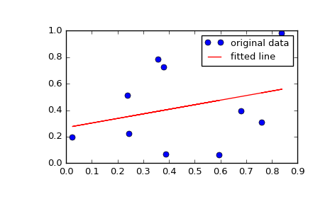

scipy.stats.mstats.linregress¶
-
scipy.stats.mstats.linregress(x, y=None)[source]¶ Calculate a linear least-squares regression for two sets of measurements.
Parameters: x, y : array_like
Two sets of measurements. Both arrays should have the same length. If only x is given (and y=None), then it must be a two-dimensional array where one dimension has length 2. The two sets of measurements are then found by splitting the array along the length-2 dimension.
Returns: slope : float
slope of the regression line
intercept : float
intercept of the regression line
rvalue : float
correlation coefficient
pvalue : float
two-sided p-value for a hypothesis test whose null hypothesis is that the slope is zero.
stderr : float
Standard error of the estimated gradient.
See also
scipy.optimize.curve_fit- Use non-linear least squares to fit a function to data.
scipy.optimize.leastsq- Minimize the sum of squares of a set of equations.
Notes
Missing values are considered pair-wise: if a value is missing in x, the corresponding value in y is masked.
Examples
>>> import matplotlib.pyplot as plt >>> from scipy import stats >>> np.random.seed(12345678) >>> x = np.random.random(10) >>> y = np.random.random(10) >>> slope, intercept, r_value, p_value, std_err = stats.linregress(x, y)
To get coefficient of determination (r_squared)
>>> print("r-squared:", r_value**2) ('r-squared:', 0.080402268539028335)
Plot the data along with the fitted line
>>> plt.plot(x, y, 'o', label='original data') >>> plt.plot(x, intercept + slope*x, 'r', label='fitted line') >>> plt.legend() >>> plt.show()
